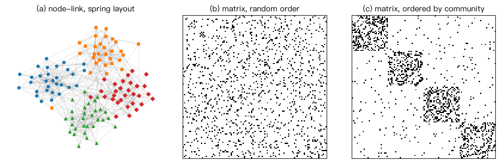

Example05 / 13
同一个网络的两种画法——节点–链接图与按社团排序的邻接矩阵
用种植分割模型（4 个社团、每个 30 个节点）生成网络，并排画出： (a) 弹簧布局的节点–链接图；(b) 节点随机排列的邻接矩阵；(c) 按 Louvain 社团排序的邻接矩阵。 配色用 matplotlib 的 “tab10” 前 4 色并辅以不同标记形状，避免只靠红绿区分。 解读：节点–链接图中的“团块”依赖布局算法的随机初值；排序后的矩阵中，社团表现为对角块， 块外的点就是社团间连边，块内密度可以直接读出——稠密网络中矩阵往往比节点–链接图更诚实。
Output输出图

Output文字输出
节点 120，边 630，Louvain 社团数 4，Q = 0.561 社团内边占全部边的比例 = 0.81
Code代码
# 用种植分割模型（4 个社团、每个 30 个节点）生成网络，并排画出：
# (a) 弹簧布局的节点–链接图；(b) 节点随机排列的邻接矩阵；(c) 按 Louvain 社团排序的邻接矩阵。
# 配色用 matplotlib 的 "tab10" 前 4 色并辅以不同标记形状，避免只靠红绿区分。
# 解读：节点–链接图中的“团块”依赖布局算法的随机初值；排序后的矩阵中，社团表现为对角块，
# 块外的点就是社团间连边，块内密度可以直接读出——稠密网络中矩阵往往比节点–链接图更诚实。
import networkx as nx
import numpy as np
import matplotlib.pyplot as plt
G = nx.planted_partition_graph(4, 30, p_in=0.3, p_out=0.02, seed=3)
comms = sorted(nx.community.louvain_communities(G, seed=0), key=len, reverse=True)
label = {v: i for i, c in enumerate(comms) for v in c}
print(f"节点 {G.number_of_nodes()}，边 {G.number_of_edges()}，Louvain 社团数 {len(comms)}，"
f"Q = {nx.community.modularity(G, comms):.3f}")
rng = np.random.default_rng(0)
order_rand = list(rng.permutation(list(G.nodes())))
order_comm = [v for c in comms for v in sorted(c)]
A_rand = nx.to_numpy_array(G, nodelist=order_rand)
A_comm = nx.to_numpy_array(G, nodelist=order_comm)
within = sum(1 for u, v in G.edges() if label[u] == label[v]) / G.number_of_edges()
print(f"社团内边占全部边的比例 = {within:.2f}")
fig, ax = plt.subplots(1, 3, figsize=(11, 3.6))
pos = nx.spring_layout(G, seed=1)
colors = plt.get_cmap("tab10").colors
markers = ["o", "s", "^", "D", "v", "P"]
nx.draw_networkx_edges(G, pos, ax=ax[0], alpha=0.15, width=0.5)
for i, c in enumerate(comms):
nx.draw_networkx_nodes(G, pos, nodelist=list(c), ax=ax[0], node_size=18,
node_color=[colors[i % 10]], node_shape=markers[i % len(markers)])
ax[0].set_title("(a) node-link, spring layout"); ax[0].axis("off")
ax[1].imshow(A_rand, cmap="Greys", interpolation="none"); ax[1].set_title("(b) matrix, random order")
ax[2].imshow(A_comm, cmap="Greys", interpolation="none"); ax[2].set_title("(c) matrix, ordered by community")
for a in ax[1:]:
a.set_xticks([]); a.set_yticks([])
plt.tight_layout(); plt.show()Run在浏览器中运行
首次加载 Python 环境约需 20–40 秒；可以修改参数后重新运行。